No items match these filters

All
0 items
Grid
Solo
List
Canvas
Infinity
Export 1 file
Add images and videos, or drop them anywhere in the window.
coloca aqui uma foto sua de neném
e aqui uma foto sua de agora